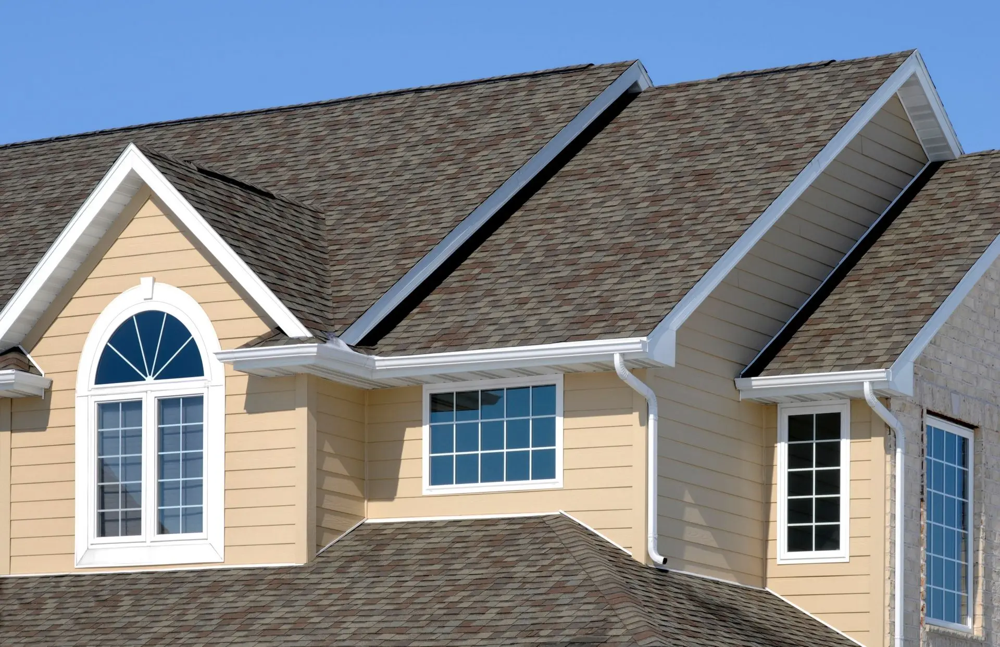
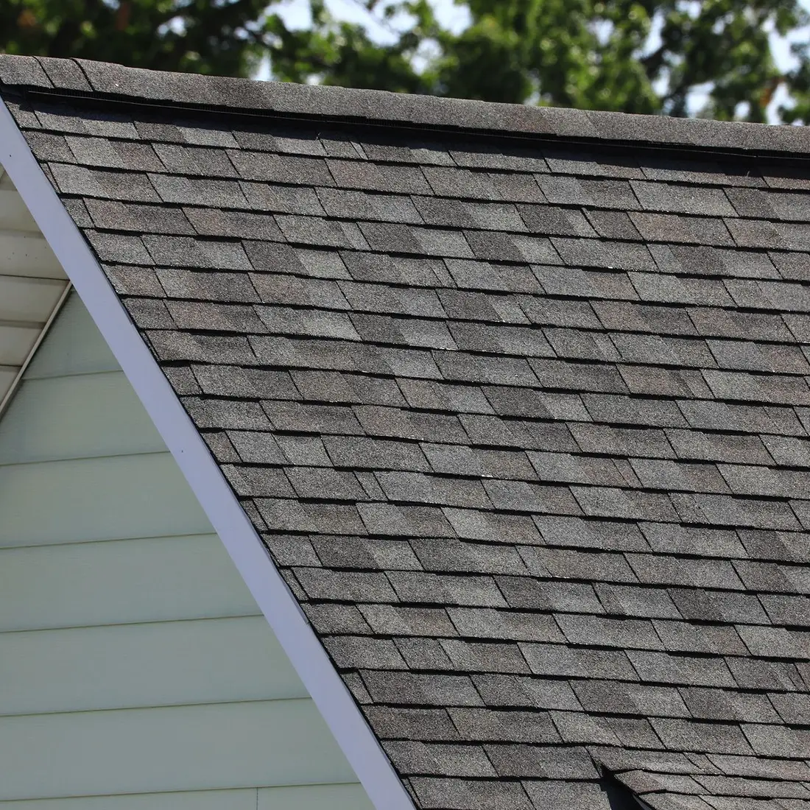
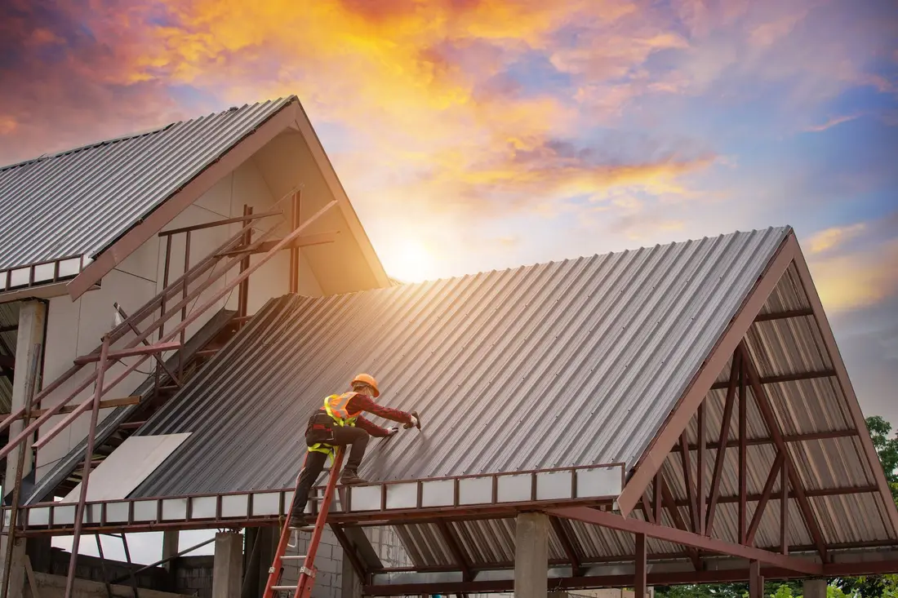
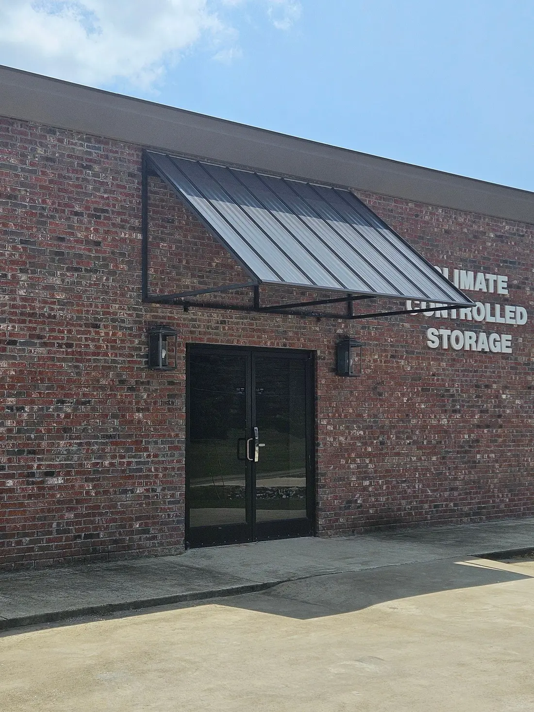

Tupelo, MS · Family-owned and operated since 1972
We handle any roofing service you need
Professional roofing for residential and commercial clients: new roof installation, repair and replacement, with sheet metal fabrication to complement our roofing services.
Free estimates and discounts for seniors and military personnel
Roofing and sheet metal
Your roof is your home or business first line of defense against the weather. At Wages Sheet Metal & Roofing, LLC in Tupelo, MS, we provide professional roofing services for residential and commercial clients.

Shingle roofs
Shingle roof replacement and repair, including complete tear-offs for residential roofs.
Learn more →
Metal roofs
Durable, energy-efficient metal roofing for homes and businesses.
Learn more →TPO roofs
TPO for flat and low-slope roofs: durable, affordable and energy efficient.
Learn more →
Sheet metal work
Sheet metal fabrication and custom metal awnings.
Learn more →Why choose our roofing services?
A leaky or damaged roof can lead to expensive repairs. Whether you need a new roof installation, repair or replacement, we have the expertise and experience to get the job done right.
- Over 80 years of combined roofing experience
- A licensed, bonded and insured roofing company
- A manufacturer warranty on all new roofs
- A written workmanship warranty on all new roofs
- Free written roofing services estimates
- We accept all major credit cards
What customers say
Wages Roofing did an awesome job on my new roof. They helped me pick out a beautiful color to match my house. Shingles were delivered in a timely manner and roof was put on and the crew cleaned up nicely afterwards. Very pleased overall. Great company and great people!
Wages Roofing did an awesome job for us! I love my new roof and they are some of the best people you will ever meet! They are trustworthy and strive to make the customer happy!
Our roof was done by Wages Roofing. Very reliable and dependable company. We are very pleased with our new roof. Fast and friendly service and very fair price.
Residential and commercial
Our residential roofing services are designed to keep your home dry, comfortable and secure, including complete tear-offs. Our team also has the skills and equipment to handle any commercial roofing project, from repairs and maintenance to full replacements.
Visit
63 Carnathan Dr
Tupelo, Mississippi 38801
- Mon–Fri
- 8:00 am – 5:00 pm
- Sat–Sun
- Closed
We accept Visa, MasterCard and Discover.
Call 662-840-5101